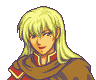

Support Rank C

あなた・・・！

ん？
まさか 本当に・・・
あなたなのですか！
な なんだあ？
一体なんのこったい？
おれはアストール
ケチな盗賊だよ
・・・似ている・・・
似ているのです・・・
ずっと前・・・いなくなった
私の夫に・・・
はあ？
私の夫は・・・ナバタの里で
私と暮らしていました
私に何も言わず・・・
遠いどこかへ行ってしまうまで・・・
はあ・・・で そいつが
おれにそっくりだって？
けど 大陸には同じ顔の人間が
３人はいるっていうからねえ
まって！
足を見せてください
おわっと
な なんだい？
初めてあの人と出会ったとき・・・
あの人は・・・
砂漠の中に倒れていました
砂漠の熱にやられて・・・
それまでの記憶を失って・・・
身体には あちこちに
深い刃の傷・・・
足には 特にひどいケガを負っていて・・・
その傷は結局 なおりませんでした
そりゃ
人違いだよ
おれの足はきれいなもんだよ
んな痛そうな傷はねえって
んじゃ おれは急ぐんでね
あ・・・
Support Rank B
・・・・・・
また あんたかい？
本当に あなたは・・・
あの人ではないのですか？
ああ
けど もったいない話だねえ
あんたみたいな美人を捨てるなんて
おれのそっくりさんは ひでえ野郎だ
・・・・・・
話だけでも 聞いてください
あの人の話を・・・
ああ かまわねえよ
・・・ひどいケガをしたあの人を
介抱しているうちに・・・
あの人と 私は・・・
いっしょに暮らすようになりました
何年か・・・
幸せな日々が続きました
あの人の傷は回復し
記憶も 少しずつ戻っていきました
私にはそれが うれしくも・・・
少し 怖くもありました
・・・・・・
そんなとき・・・ならずものたちが
私たちの里に攻めてきました
あの人は 私を里に残して
戦いに出かけ・・・
そのまま 戻ってきませんでした
・・・・・・
ならずものたちの死体は
みな 流砂に沈んでいました
あの人の姿は見つからず・・・
同じ運命をたどったのだと・・・
じゃ そうなんだろうよ
それでも・・・心のどこかで
あきらめきれないのです
あの人は どこかで生きている・・・
そう思えてならないのです
はあ・・・なるほどね
でも・・・
生きていれば・・・
だまって消えてしまうはずがない
私に何も言わずに
どこかへ行ってしまうなんて・・・
どうせ
ろくな生き方してねえ男だ
そんな男のことなんざ
忘れちまった方が あんたのためさ
ああ そうだ
おれが そいつのかわりに
キスでもひとつ・・・
っ！
いてて・・・
まいったねえ・・・
Support Rank A
あ・・・
おっと ふられた男は
おとなしく消えますか・・・
まって！
ゴルロイス・・・！
・・・いえ アストール
・・・・・・
これを・・・見てください
初めて会った時・・・
あの人が持っていたものです
なんだいこりゃ？
こどものラクガキかなんかだろ
いいえ
私は外に出て 調べました
これは リキアの密偵が用いる
特別なしるし・・・
密偵という仕事が
どういうものなのかも
私は 調べました
それで・・・わかったのです
・・・・・・
密偵は 敵にとって
危険すぎる情報を抱いて生きている
もし捕まれば・・・
敵は その弱みを徹底的に探し出す
家族がいれば家族を
恋人がいれば恋人を捕らえて
一つ残らずしゃべるまで・・・
終わりのないごう問にかけるのだと
だから・・・密偵は
一人でいなくてはならないのだと
友も 家族も 恋人も・・・
何一つもってはならないのだと
・・・水をさすようで悪いがね
そいつは死んだ
ナバタの砂漠にのまれたのさ
密偵だのなんだのは・・・
ぜんぶ あんたの想像だよ
それとも・・・
砂漠のしんきろうでも見たか だね
・・・・・・
そうですか・・・
では きっと私は・・・
夢を見ていたのでしょう
つかの間の 幸せな夢を・・・
・・・イグレーヌさんよ
いや・・・
なんでもねえ・・・
・・・・・・
忘れてくれ・・・何もかもな